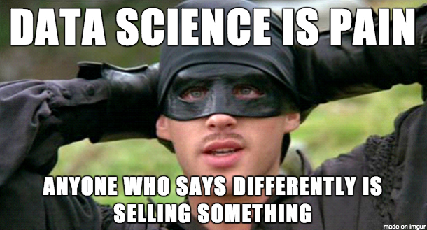
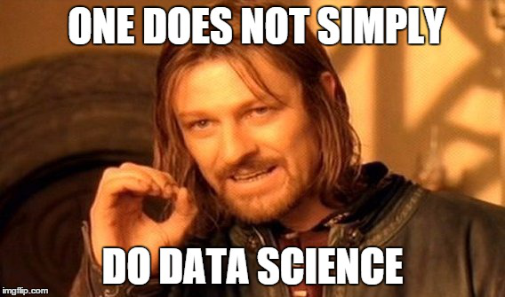
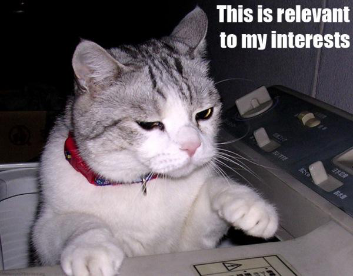

About CSCI 1360E
Overview
 Informatics, or "data science," are rapidly becoming essential skills for scientists across fields; in addition to field-specific specializations, researchers require knowledge of and experience with quantitative analytical techniques for extracting knowledge from raw data.
This course aims to provide an introduction to concepts in scientific programming and data science using the Python language. Students are given hands-on opportunities to learn techniques applicable to quantitative analyses across a broad range of fields. These core techniques involve formulating solutions in terms of their inputs and outputs (functional programming), repeated operations (loops), branching operations (conditionals), different methods of organizing data (data structures), how to implement an optimal problem-solving strategy (algorithm design), and methods for visualizing and interpreting results.
tl;dr Data science is important, almost irrespective of what field you go into. So we're going to learn what it is and how it works. But first we'll learn Python.
Prerequisites
The only hard prerequisite is MATH 1113 Precalculus.
This course assumes no prior programming or statistics knowledge. It is meant to be an introduction to these concepts in the larger context of data science and scientific programming through the lens of the Python ecosystem. The course is targeted at undergraduate students across fields who, irrespective of their ultimate career goals, are interested in a foundational understanding of programming and quantitative data analytics.
That said, there's a LOT to cover, so this course moves fast! Please don't hesitate reach out if you need help!
Grading

- Participation: 5%
- Assignments: 60%
- Midterm Exam: 15%
- Final Exam: 20%
There will be 10 programming assignments, each worth 6% of your total grade. These are intended to give you hands-on experience with the concepts being taught in the class and to familiarize you with the Python language and its ecosystem. They are available as Jupyter notebooks, so all you need is a web browser, an internet connection, and access to the UGA network.
The participation component takes the form of asking and/or
answering questions in the Slack channel. Ask questions!
Answer the questions of your peers! Start discussions!
There's even a #lounge channel to discuss
interesting ideas and events beyond the course itself!
There will be midterm and final exams. These will take place on JupyterHub. More details to come.
Materials
Textbooks
 There are no required textbooks. If, however, you wish to purchase a reference textbook, I would highly recommend the following:
- VanderPlas, Jake. Python Data Science Handbook: Essential Tools for Working with Data (1st ed., 2016) ISBN-13: 978-1491912058.
- Grus, Joel. Data Science from Scratch: First Principles with Python (1st ed., 2015) ISBN-13: 978-1491901427.
- Shaw, Zed. Learn Python the Hard Way (3rd ed., 2013) ISBN-13: 978-0321884916.
- Matthes, Eric. Python Crash Course (1st ed., 2016) ISBN-13: 978-1593276034.
JupyterHub
This is the primary point of interaction for homework assignments and exams. Jupyter notebooks posted for lecture will be linked from the course website, but homework assignments and exams will be accessible through this link:
Remember: if you have problems accessing JupyterHub, check that you're either on UGA's campus network or are connected to it via VPN. If neither of these are true, you can check out EITS' instructions for getting set up with VPN. If one of them IS true, let me know and we'll see about sorting it out.
Slack
This is the primary point of interaction for asking for and offering help. I will answer questions when I can, but also I encourage everyone to help each other out, too!
I also get inundated with emails on a daily basis, so using Slack to ask questions effectively acts as a filter: I'll most likely respond to a Slack question more quickly than I would by email.
Policies
Assignments
Assignments are due by 11:59:59pm on the noted date. Assignments turned in after this deadline will lose 25/100 points for every subsequent 24 hour-period they are late.
The presence or absence of any form of help or collaboration, whether given or received, must be explicitly stated and disclosed in full by all involved, on the first page of their assignment ("I did not give or receive any help on this assignment" or "I helped [person] with [specific task]."). Collaboration without full disclosure will be handled severely; except in usual extenuating circumstances, my policy is to fail the student(s) for the entire course.
DO NOT COPY CODE. I cannot stress this enough. Coding is a lot like writing: everyone has their own style that is very recognizable. It's not difficult to tell when students share their code. Don't do it.
Exams
Any material covered in lecture or homework assignments is considered fair game for both exams.
Both exams will be cumulative. I may even be
lazy clever and copy-paste midterm
questions into the final.
Exams will be timed. You can complete them within the time frame allotted in under the maximum time interval. Collaboration in any form during either exam will be grounds for immediate failure of the course.
Academic Honesty
The UGA Academic Honesty Policy is the final word on these matters. Lack of knowledge of these policies is not sufficient justification for violations. If in doubt, ask me.
Contact
If you need to reach me, there are multiple ways:

- The 1360E Slack chat
- Office: Boyd GSRC, Room 638A.
- Email: squinn@cs.uga.edu
- Phone: 2-4661